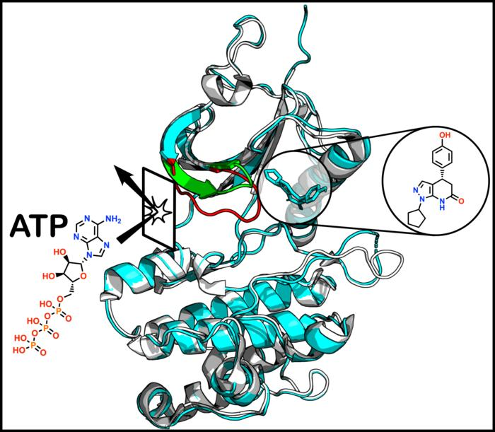
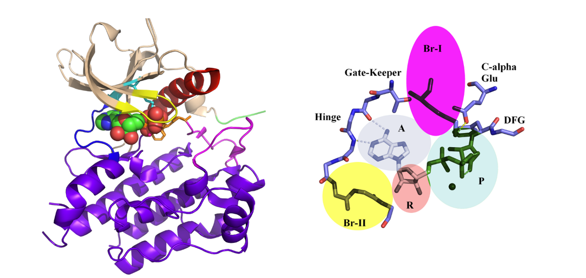
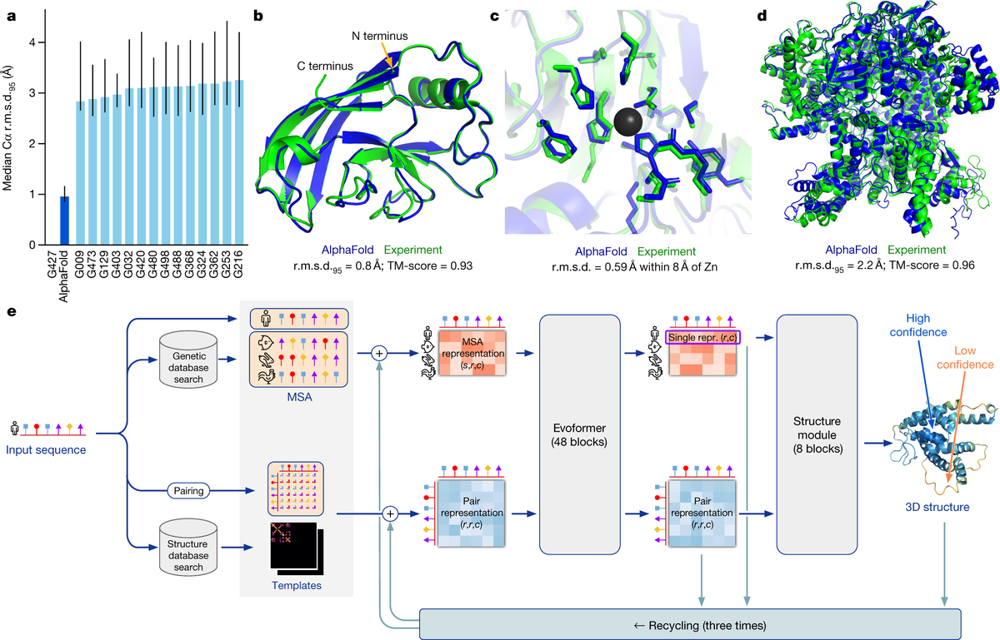

Executive Summary
마운트 시나이 아이칸 의대 연구팀이 암 표적 단백질 PKMYT1에서 아무도 보지 못했던 약물 결합 부위를 찾아냈습니다. 2026년 6월 2일 JACS에 실린 이 연구가 흥미로운 이유는 발견 자체보다, 그 발견을 누가 놓쳤는가에 있습니다. AlphaFold2와 AlphaFold3, Boltz-2, 그리고 분자 동역학 시뮬레이션까지 동원된 최신 AI 예측 도구가 이 결합 부위를 하나도 짚어내지 못했습니다. 이 글은 그 빈칸이 무엇을 뜻하는지 데이터의 눈으로 봅니다.
연구를 이끈 Avner Schlessinger 교수는 "AI는 이미 알려진 단백질 형태를 예측할 때는 매우 정확했지만, 실험으로만 드러낼 수 있는 완전히 예상 밖의 결합 포켓은 놓쳤다"고 말합니다. 이 결합 부위는 단백질이 끊임없이 모양을 바꾸는 동적 특성 위에서만 잠깐 열리는 구조였습니다. 학습 데이터에 없는 형태였으니, 학습한 형태를 재현하는 데 강한 모델이 닿지 못한 것은 어쩌면 당연합니다.
결국 그 주머니를 연 것은 X선 결정학이라는 측정 데이터였습니다. 예측 데이터와 측정 데이터는 같은 데이터가 아닙니다. 한쪽은 모델이 아는 패턴을 재현하고, 다른 쪽은 현실에서 처음 길어 올린 신호를 담습니다. 신약 개발에서 발견의 한계선이 어디에 그어지는지를, 이 작은 포켓 하나가 보여줍니다.
주요 수치
이 발견을 세 숫자로 압축하면 다음과 같습니다. 새 결합 부위를 놓친 AI 도구의 수, 같은 ATP 결합 부위를 공유해 선택성을 어렵게 만드는 인간 키나제의 규모, 그리고 결합 부위 전체를 다른 곳으로 옮겨 버린 화학 변형의 크기입니다.
출처: Icahn School of Medicine at Mount Sinai (2026)
4종 모두
새 포켓을 놓친 AI 도구
AlphaFold2·3, Boltz-2, 분자 동역학
500+
유사 ATP 부위를 가진 키나제
기존 표적 전략의 선택성 난제
변형 1개
결합 부위를 전환시킨 화학 변형
숨은 포켓 → 일반 ATP 부위

너무 닮은 ATP 결합 부위
PKMYT1은 세포가 자라고 분열하는 과정을 조절하는 키나제 단백질입니다. 암에서는 이 조절이 어긋나기 때문에, PKMYT1을 막으면 암세포의 폭주를 멈출 수 있으리라는 기대가 있습니다. 그래서 신약 개발의 유망한 표적으로 꼽혀 왔습니다.
문제는 어디를 막느냐입니다. 지금까지 키나제 억제제는 대부분 ATP가 들어앉는 자리를 노렸습니다. 그런데 인간의 키나제는 500종이 넘고, 그 ATP 결합 부위는 서로 매우 비슷하게 생겼습니다. 한 곳을 겨눈 약물이 엉뚱한 키나제에도 들러붙기 쉽다는 뜻입니다. 표적만 정확히 맞히기 어려우니, 부작용과 선택성 저하가 따라옵니다.
그래서 연구자들이 오래 바라 온 것이 알로스테릭 부위입니다. ATP 자리가 아닌, 단백질의 다른 위치에 약물이 결합해 기능을 조절하는 방식입니다. 만약 그 부위가 PKMYT1에만 있는 고유한 형태라면, 다른 키나제는 건드리지 않고 이 단백질만 정밀하게 겨눌 수 있습니다. 이번 연구가 찾아낸 것이 바로 그런 자리였습니다.
핵심은 이 알로스테릭 포켓이 고정된 구조가 아니라는 점입니다. 단백질이 끊임없이 모양을 바꾸는 동적 특성 위에서만 잠깐 모습을 드러내는, 말하자면 평소에는 닫혀 있는 주머니였습니다. 약을 정밀하게 만들 기회가 거기 있었지만, 그 기회는 단백질이 움직이는 순간에만 열렸습니다.

AI가 맞힌 것과 놓친 것
연구팀은 최신 도구를 빠짐없이 동원했습니다. 단백질 구조 예측의 대명사가 된 AlphaFold2와 그 후속인 AlphaFold3, 그리고 새로 주목받는 Boltz-2까지 썼고, 단백질의 움직임을 시뮬레이션하는 분자 동역학 계산도 돌렸습니다. 결과는 한쪽으로 갈렸습니다. 이미 알려진 PKMYT1의 형태는 잘 재현했지만, 숨어 있던 알로스테릭 포켓은 어느 도구도 예측하지 못했습니다.
이 한계를 짚은 사람은 AI 신약 개발을 가장 적극적으로 밀어붙여 온 쪽이었습니다. 연구를 이끈 Avner Schlessinger 교수는 마운트 시나이의 AI 기반 소분자 신약 개발 센터를 이끄는 인물입니다. AI 예측을 누구보다 신뢰할 만한 위치에 있는 연구자가 그 도구의 빈칸을 분명히 인정했다는 점에서, 다음 진단은 더 무겁게 들립니다.
"AI는 이미 알려진 단백질 형태를 예측할 때는 매우 정확했습니다. 그러나 우리가 실험으로만 밝혀낼 수 있었던, 완전히 예상 밖의 결합 포켓은 놓쳤습니다." — Avner Schlessinger, Icahn School of Medicine at Mount Sinai
왜 그랬을까요. AlphaFold 계열 모델은 이미 풀려 있는 단백질 구조 데이터를 학습해, 비슷한 서열이 어떤 형태로 접힐지를 정교하게 추론합니다. 학습한 형태의 공간 안에서는 놀랍도록 정확합니다. 그러나 이번 포켓은 단백질이 움직이는 동안에만 잠깐 나타나는, 학습 데이터에 사실상 존재하지 않던 형태였습니다. 모델이 본 적 없는 모양을 만들어 내라는 것은, 가진 패턴의 바깥을 상상하라는 요구와 같습니다.
이 단백질이 얼마나 예민한지는 발견 과정에서 더 분명해졌습니다. 연구팀은 아주 작은 화학 변형 하나만으로 약물 분자가 숨은 포켓 대신 일반적인 ATP 결합 부위로 자리를 옮겨 버리는 것을 관찰했습니다. 결합의 위치 자체가 미세한 차이에 따라 통째로 바뀐 것입니다. 이렇게 좁은 마진 위에서 일어나는 일을, 정적인 평균 구조를 재현하는 데 능한 예측 모델이 미리 잡아내기는 어렵습니다.

실험이 주머니를 열었다
주머니를 실제로 연 것은 X선 결정학이었습니다. 단백질에 결합한 분자의 위치를 원자 수준에서 직접 들여다보는 측정 기법입니다. 연구팀은 AlphaFold2의 구조 예측 위에서 가상 스크리닝으로 후보 물질의 범위를 좁힌 뒤, X선 결정학으로 실제 결합 구조를 확인하고, 생화학 실험과 세포 실험으로 검증했습니다. AI가 탐색을 거들었지만, 새 부위의 존재를 증명한 것은 실험 데이터였습니다.

이 분업의 의미가 중요합니다. AI 예측은 이미 아는 구조의 공간을 빠르게 훑어 가능성이 높은 곳을 가리키는 데 강합니다. 반면 실험은 아무도 본 적 없는 구조의 공간을 직접 열어젖힙니다. 둘은 경쟁 관계가 아니라, 서로 다른 종류의 일을 합니다. 이번 연구는 그 경계선을 또렷하게 보여 준 사례입니다.
공동 연구자 Michael Lazarus 교수는 실험적 검증이 여전히 필수인 이유를 이 발견이 다시 일깨운다고 말합니다. 모델이 아무리 정교해져도, 모델이 학습하지 못한 영역은 모델의 자신감과 무관하게 비어 있습니다. 그 빈칸은 더 큰 모델이 아니라, 현실을 직접 측정한 데이터로만 채워집니다.
"아주 작은 화학 변형 하나가 분자를 이 숨은 포켓에서 훨씬 더 일반적인 방식의 결합으로 옮겨 가게 만들었습니다." — Michael Lazarus, Icahn School of Medicine at Mount Sinai
예측 데이터와 측정 데이터
이 이야기를 데이터의 언어로 옮기면 한 문장으로 줄어듭니다. 예측 데이터와 측정 데이터는 같은 데이터가 아닙니다. AlphaFold가 내놓는 구조는 학습된 패턴을 재현한 결과이고, X선 결정학이 내놓는 구조는 현실에서 처음 길어 올린 측정값입니다. 둘 다 "단백질의 구조"라는 같은 이름표를 달고 있지만, 그 안에 담긴 신뢰의 성격은 다릅니다.
모델은 학습한 분포 안에서 가장 그럴듯한 답을 채웁니다. 그래서 알려진 형태에는 강하고, 자신 있게 빈칸을 메웁니다. 문제는 그 자신감이 학습 분포 바깥에서도 똑같이 높아 보인다는 점입니다. 이번 포켓처럼 데이터에 없던 형태 앞에서, 모델의 침묵은 "여기엔 아무것도 없다"가 아니라 "내가 본 적 없다"였습니다. 둘을 구분하지 못하면 빈칸을 발견으로 오인하게 됩니다.
그래서 발견의 한계선은 모델의 크기가 아니라 데이터의 종류와 품질에서 그어집니다. 무엇을 측정해 학습에 넣었는지, 그 측정이 단백질의 정적 평균만 담았는지 동적 순간까지 담았는지에 따라 모델이 닿을 수 있는 영역이 정해집니다. 더 키운 모델이 아니라 더 잘 측정한 데이터가 새 영역을 엽니다.
Editor's Note. 페블러스가 데이터 품질을 이야기하는 이유가 이 지점에 닿아 있습니다. 모델이 자신 있게 채우지 못하는 빈칸을 메우는 것은 결국 현실에서 길어 올린 측정 데이터입니다. 예측을 믿어도 되는 영역과 측정이 필요한 영역을 구분하는 일 — 이번 발견이 신약 개발의 현장에서 보여 준 것이 바로 그 경계입니다.
AI는 아는 모양에 강했고, 모르던 주머니는 실험만이 열었습니다. 다음에 모델이 빈칸 앞에서 침묵할 때, 그것이 "없음"인지 "본 적 없음"인지 되물어 볼 만합니다. 그 질문에 답하는 건 더 큰 모델이 아니라, 더 정직하게 측정한 데이터입니다. 끝까지 읽어 주셔서 고맙습니다.
(주)페블러스 데이터 커뮤니케이션팀
2026년 6월 19일
참고문헌
R.1학술 논문
- 1.Herrington, N. B., Khamrui, S., Zhao, Y., Lansiquot, C., Wu, R., Pandey, G., Lazarus, M. B., & Schlessinger, A. (2026). "Allosteric Inhibition of PKMYT1 Induces a Unique, Inactive ATP Binding Site Conformation." Journal of the American Chemical Society. DOI: 10.1021/jacs.6c05178
R.2업계·보도
- 2.Icahn School of Medicine at Mount Sinai. (2026). "Scientists Uncover Hidden Drug-Binding Pocket in Cancer Protein, Highlighting the Power and Limitations of AI Drug Discovery." [Press release].
- 3.EurekAlert! (2026). "Scientists uncover hidden drug-binding pocket in cancer protein." AAAS.
- 4.Technology Networks. (2026). "Hidden Drug Target in Cancer Protein Reveals Limits of AI Drug Discovery."